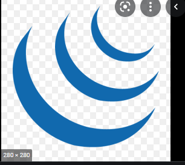

Web Development
React.js is a component based front end library that makes it very easy to build Single Page
Applications or SPAs
55.5K Tuits
JavaScript is a programming language that can run on browsers as well as desktops
123K Tuits

Web Development
123K Tuits

123K Tuits